Productor audiovisual
Producción y edición instantánea con una metodología propia que entrega mientras el evento todavía está pasando, del deportivo al corporativo.
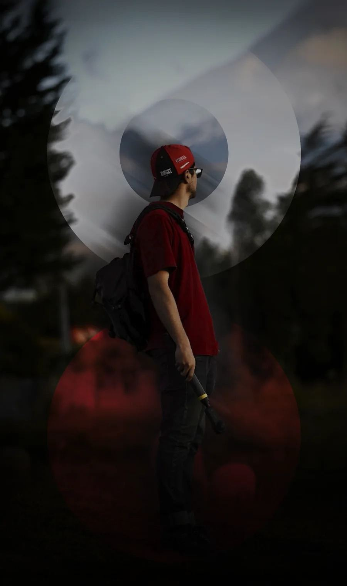
Soy Daniel Espinoza, productor audiovisual y estratega de comunicación digital. De Marca viene de mi nombre.
Creo contenido móvil de alto impacto: mezclo la inmediatez del celular con las perspectivas de las cámaras de acción, la 360 y las tomas de dron para contar un mismo mensaje desde varios ángulos y dejar una impresión que se recuerde.
Trabajo desde Cuenca para marcas, deportistas y eventos de todo el país y la región. Sistematizo cada proceso de creación para leer qué funciona, repetirlo y escalarlo, y mi especialidad es la cobertura en tiempo real: produzco, edito y publico mientras el evento todavía está pasando.
Producción y edición instantánea con una metodología propia que entrega mientras el evento todavía está pasando, del deportivo al corporativo.
Licenciado en Marketing por la Universidad del Azuay. Ideación, creación y distribución de contenido con procesos sistematizados que leen patrones de rendimiento y deciden qué crear y qué recrear en cada periodo.
Pro Motion Sport Marketing es la primera agencia especializada en marca personal de deportistas profesionales. Desde ahí cubro competencias en vivo y construyo la narrativa de pilotos, riders y atletas.
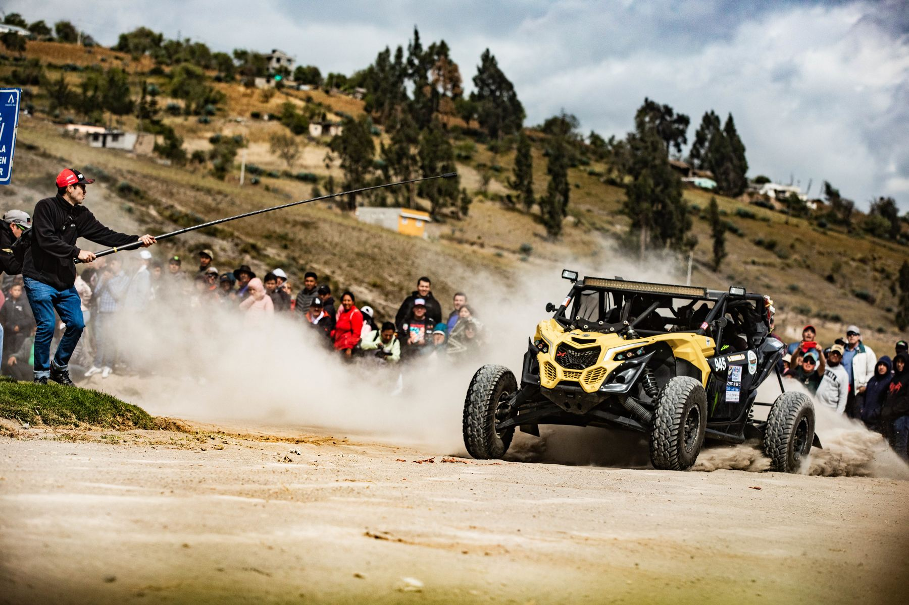
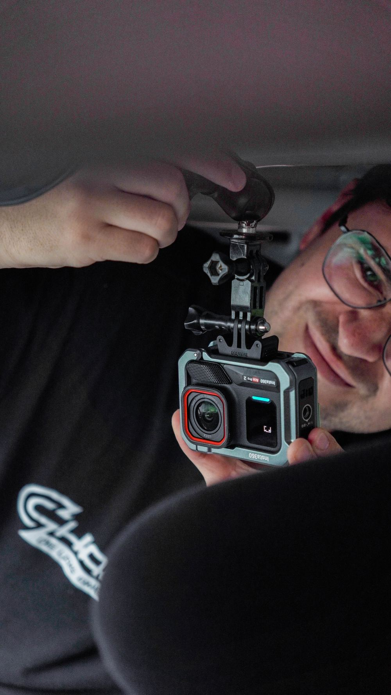
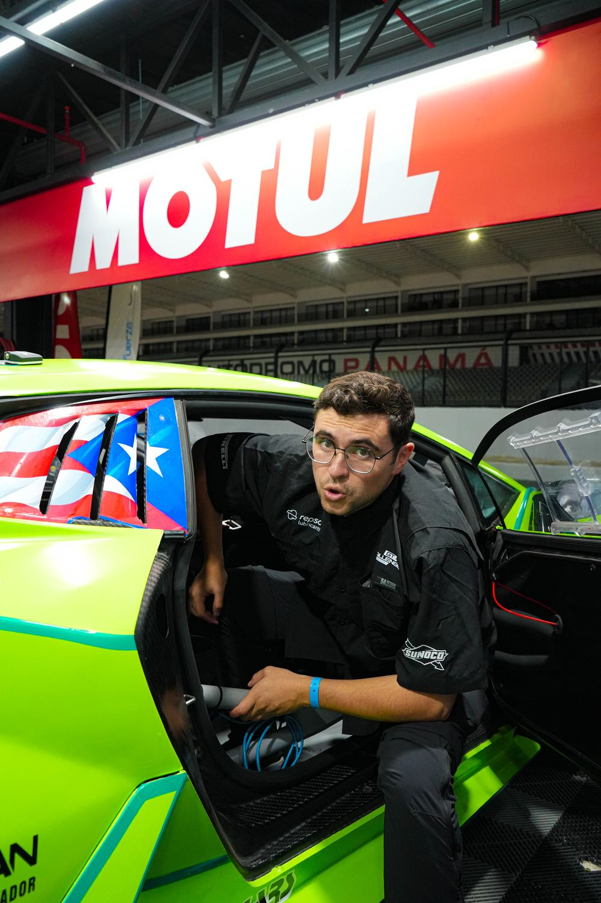
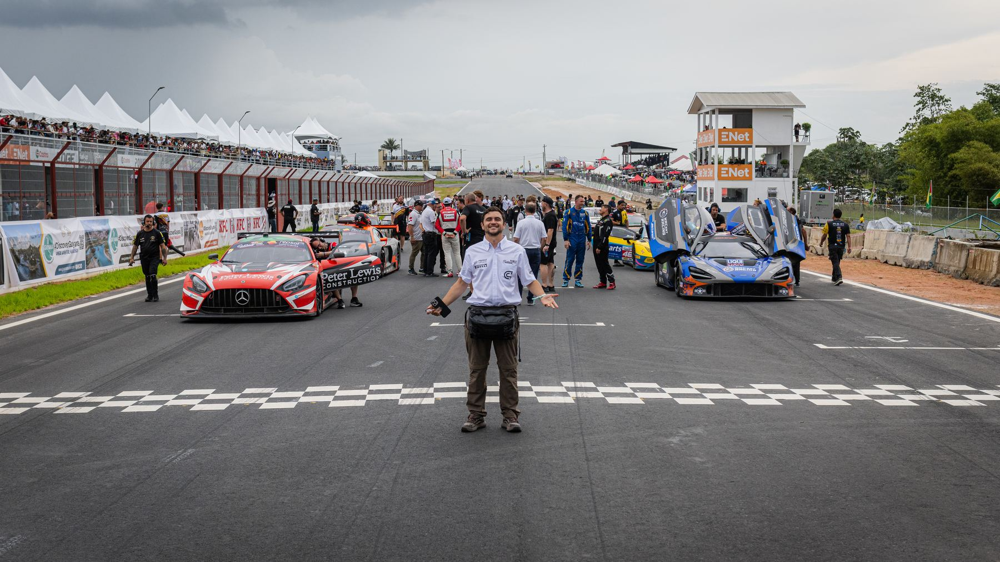
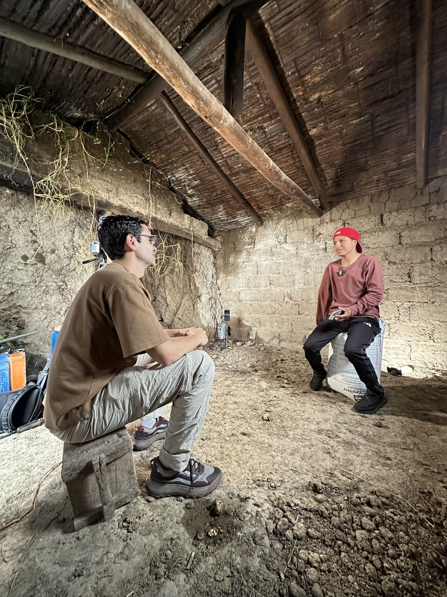
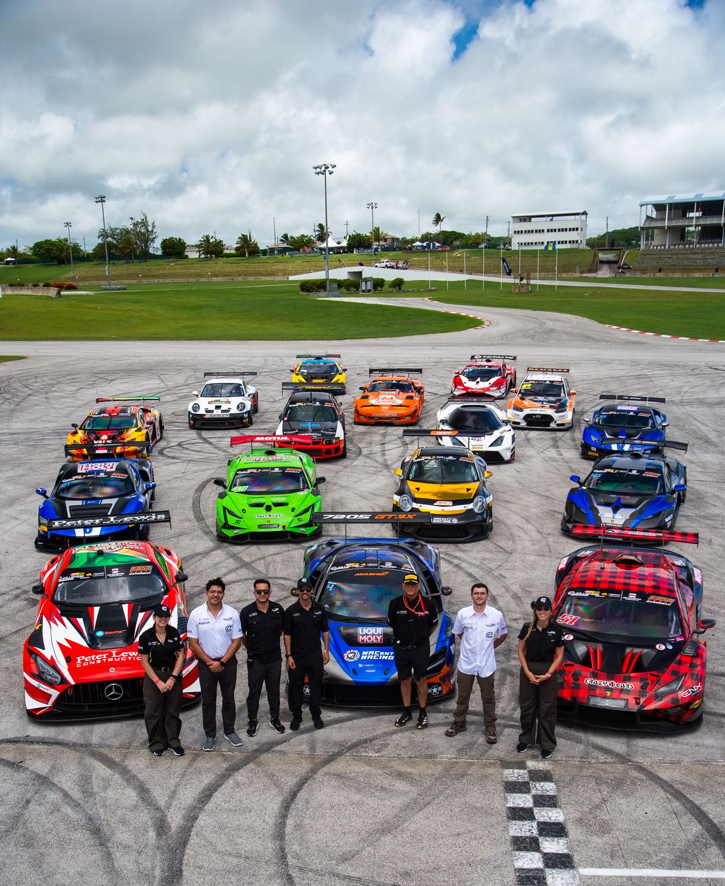
Rodaje instantáneo con iPhone, dron, cámara 360, estabilizador, micrófonos profesionales e iluminación propia. Un equipo liviano que llega a donde está la historia.
Entendemos tu marca: qué la hace única, a quién le habla y qué necesita lograr.
Ideas clave, objetivo, mensaje y recursos por pieza. Si hace falta, un micro-embudo completo.
Storytelling y dirección en el rodaje. Tomas dinámicas, aéreas, testimoniales o de producto.
Montaje, voz y sonido. Hasta dos rondas de cambios después de presentar cada video.
Medimos qué movió cada video y reajustamos el siguiente mes con esa información.
Un kit liviano y propio, pensado para llegar a donde está la historia y publicar en el momento: celular, cámaras de acción, 360, dron, audio inalámbrico e iluminación.
Apple
La cámara principal: producción instantánea en 4K, lista para editar y publicar en el mismo lugar.
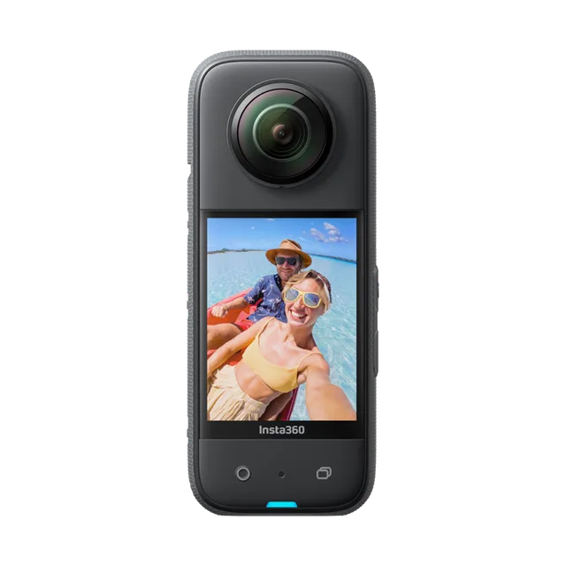
Insta360
Graba todo alrededor y decide el encuadre después. Con el palo de 3 m logra tomas tipo dron en tercera persona.
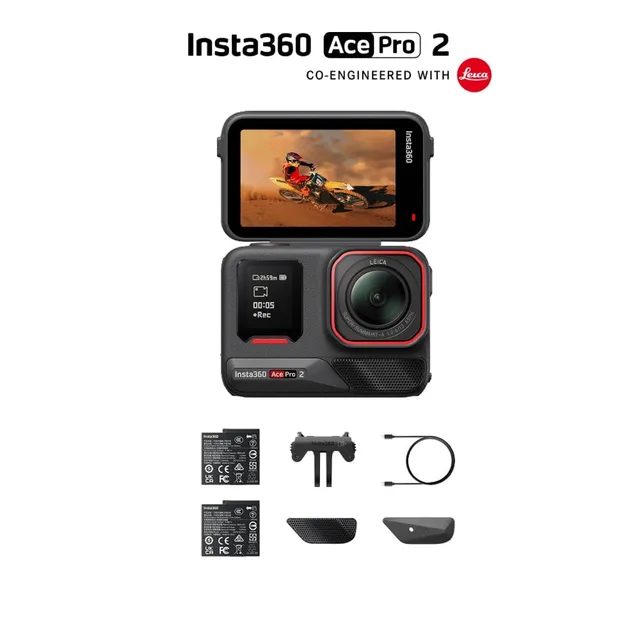
Insta360
Cámara de acción con lente Leica y sensor grande, excelente en poca luz. Ideal a bordo de autos y motos.
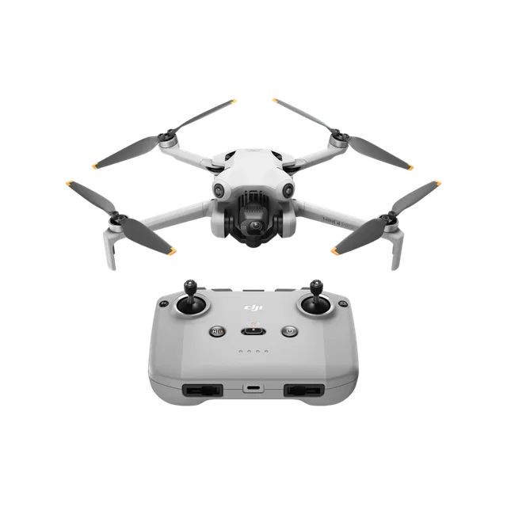
DJI
Dron compacto 4K HDR con sensores de obstáculos en todas las direcciones para tomas aéreas cinematográficas.
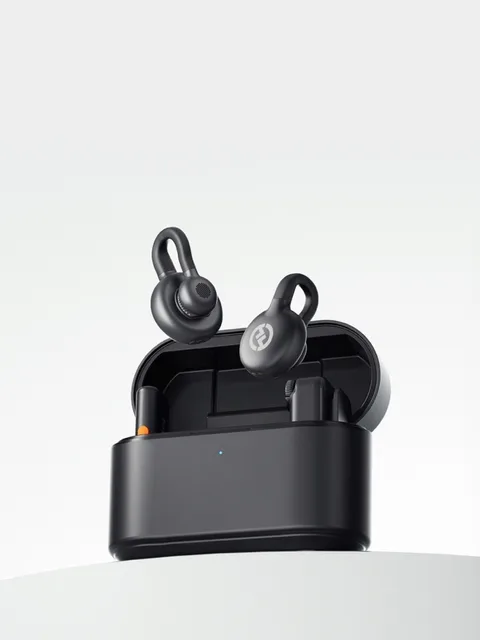
Hollyland
Micrófonos inalámbricos de 7 g, casi invisibles en cámara. Audio limpio para entrevistas, podcasts y deporte.
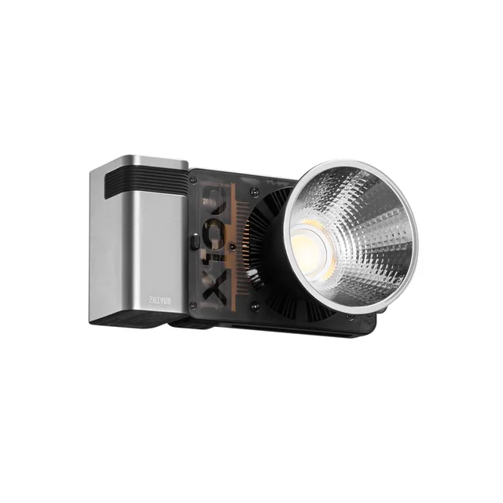
Zhiyun
Luz de 100 W del tamaño de una mano, con domo y montura Bowens. Potencia de estudio para entrevistas y producto.
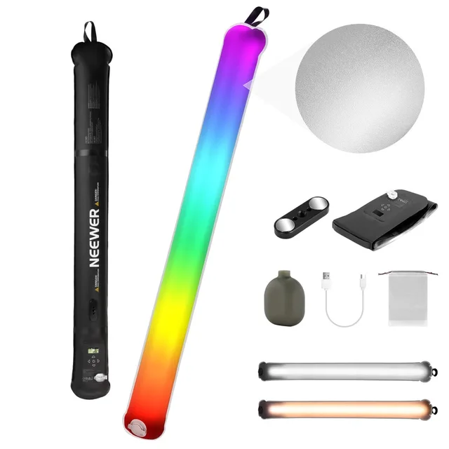
Neewer
Tubo LED a todo color, ultraliviano. Ambientación de color, retratos y tomas nocturnas.
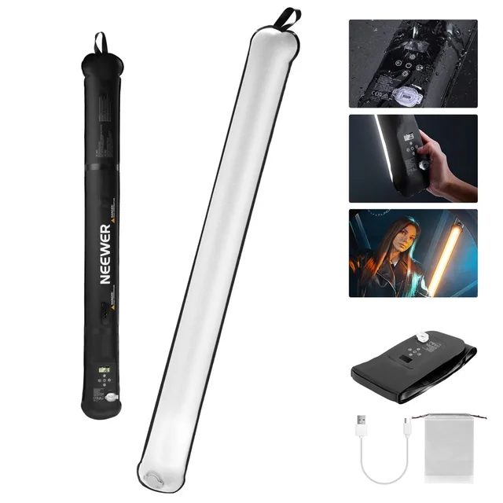
Neewer
Luz de relleno o contraluz suave para entrevistas y contenido para redes.
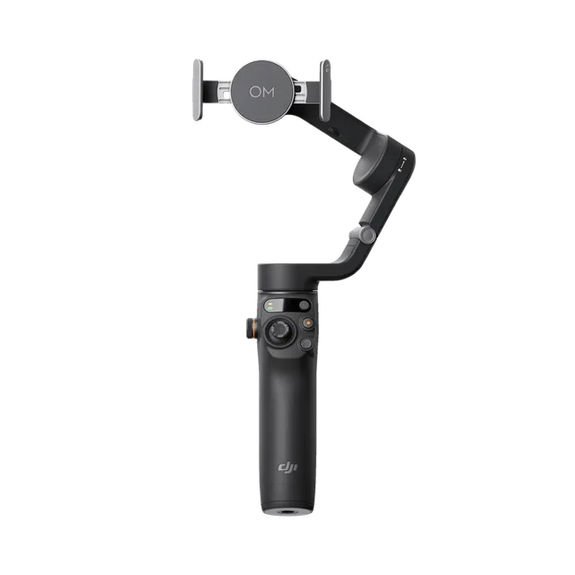
DJI
Estabilizador de 3 ejes para celular con seguimiento automático del sujeto.
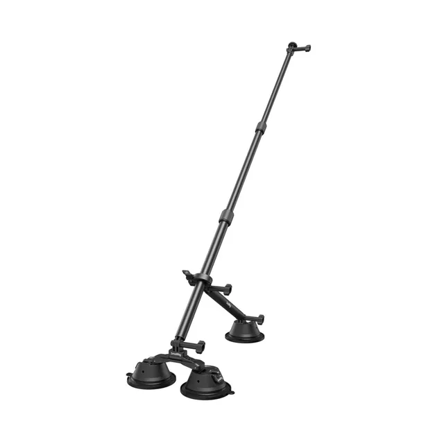
SmallRig
Montura de alta fijación para autos: con la X3 da una toma en movimiento que parece hecha con dron.
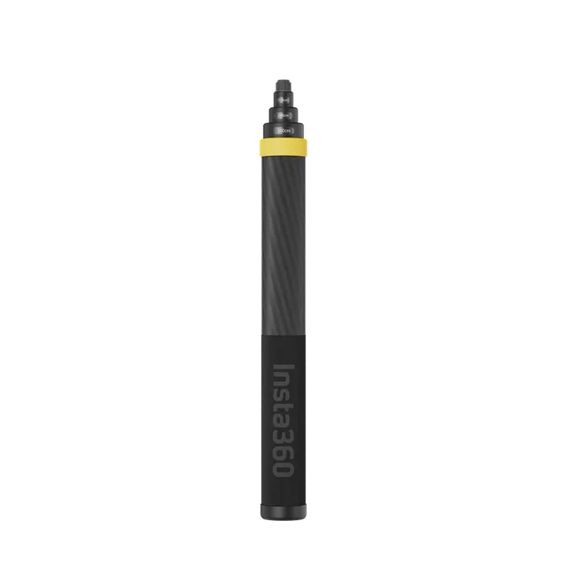
Insta360
Fibra de carbono ultraliviana. Con la cámara 360 desaparece de la toma.
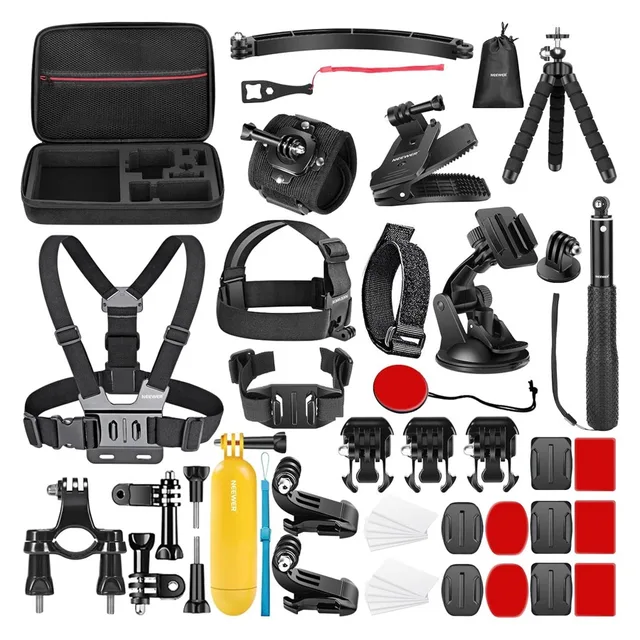
Neewer · SmallRig
Casco, pecho, manubrio, ventosas, pinzas y trípode K&F para cámaras y luces.
¿Necesitas solo el equipo? También lo alquilo para tu rodaje, con packs por día.
Ver alquiler de equipos